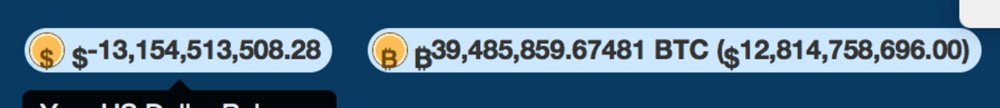

A race condition is a lesser known but fairly prevalent vulnerability type. Through this post, I hope to raise awareness about both exploiting and protecting against race conditions on the web.
What is a race condition?
Race conditions occur when there is a delay between an application checking a value and updating the value. For instance, consider a simplified example of an online bank. You have $100 in your account and a friend has $0. You can send up to $100 to the friend, but no more… right?
The company's code might look something like this:
balance = queryUserBalance() if (balance <= amountToSend) { send_money() } else { error("Not enough money :(") }
Observe that queryUserBalance is a synchronous function, so there is some time between when the server gets the user's balance from the database and when it modifies the value.
What would happen if we sent two requests to send $100 at the same time, give or take a few milliseconds? Since there is a delay between when the server checks your balance and sends the money, both times it looks like you have enough money in your account. If you're sending $100 with both requests, you would end up with $-100 in your account and your friend would get $200. Good news for you, really bad news for the bank.
Demo
Want to try out exploiting a race condition yourself? The following is an interactive demo of a real-life scenario of a race condition. You start out with $100 in your bank account and can send money between your account and a friend's. Your goal is to end up with more than $100 in one of the accounts :)
Now, there's a few ways to go about exploiting this. First, try hitting the button multiple times quickly. For demonstration purposes, I've added a 1 second latency to the database queries, so there should be more than enough time to exploit this.
Your account balance: $ - Refresh balance
Your friend's account: $
It might be easy enough when there's a 1-second delay for all requests. What about a more realistic scenario, where it's just a matter of milliseconds? I encourage you to test this out by firing up Burp Suite and doing the following.
- Turn on intercept mode and intercept the request to send money.
- Right click the request, and copy it as a curl command.
- Execute the request on the command line in the form
(command) & (command) & (command)as many times as you would like. This executes the command asynchronously.
Examples
Here's some of the more impactful instances of race conditions I've found.
ChangeTip - race condition in transferring money
In ChangeTip, a now-defunct bitcoin tipping site, users could transfer money between their bitcoin and dollar balances. I discovered a race condition in transfering money between the balances, allowing me to obtain an infinite amount of money in my account:
Financial websites are often prone to race conditions; I've found race conditions in multiple bitcoin sites allowing infinite withdrawal of money.
Coupons
Another functionality to keep an eye out for occurs when redeeming coupons or other single-use items. For example, I identified a vulnerability on Instacart that allowed me to redeem the same coupon multiple times. Interestingly, I was able to bypass the initial patch by testing two different coupons, demonstrating that race conditions are not always simple to patch.
Voting Systems
Other examples of race conditions often occur with voting systems when a user should only be able to cast one vote. Such a flaw affected sites such as Medium, Zendesk, Coinbase, and Urban Dictionary.
Edge Cases
Race conditions aren't limited to these specific examples, and thinking outside the box can often lead to unexpected results. For instance, I discovered a race condition in a private program when executing a unique action twice that would expose an SQL query. This was due to the database item being flagged as unique, causing the database to return an error.
In short, you should look for race conditions whenever a one-time action occurs, whether sending money, redeeming coupons, or casting a vote.
Prevention
Now that we've gotten a sense of the potential impact of race conditions, how can we build secure code that prevents this? Going back to the demo, which was written using Node.js, the server does the following:
- Check that the user has enough money in their account.
- [latency when performing database lookups]
- Subtract the amount to send from the user's balance, and add it to the friend's account.
One common solution to prevent race conditions is known as locking. This ensures that at any given time, at most one thread can modify the database. Many databases provide functionality to lock a given row when a thread is accessing it.
In the case of the demo, it would be appropriate to verify the balance of the user directly before sending money. This is another type of locking, where the query to send money includes logic to send only if the account has enough money.
From here, I encourage you to test out race conditions for yourself. Feel free to reach out to me via twitter if you have any questions.